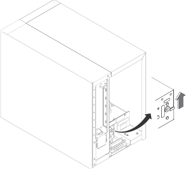
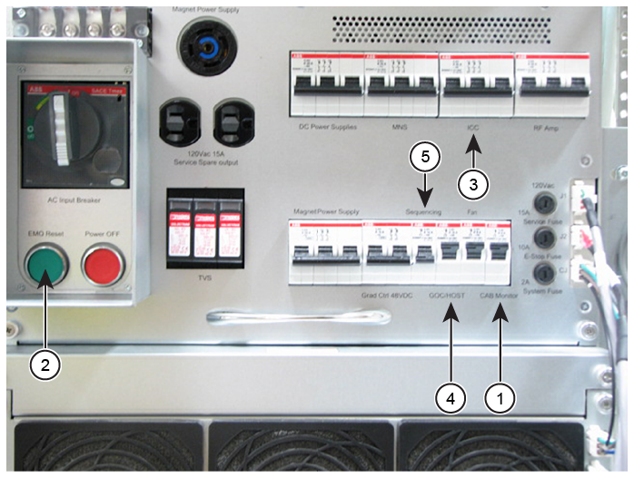

Setting the Integrated System Cabinet (ISC) System Power Distribution Unit (SPDU) breakers and sub breakers
Complete these steps to finish the first portion of the power on procedure.
Procedure
Make sure all circuit breakers on the front of the ISC cabinet SPDU are OFF.
Switch the Global Operator Cabinet (GOC) PDU breaker to ON.
Figure 1. GOC PDU breaker

Notify field service and other installation personnel who are working at the installation site that the LOTO will be removed so the Main Disconnect Panel (MDP) or facility PDU power can be turned on.
Restore power to the ISC SPDU at the MDP or facility PDU.
Switch the MDP main breaker to ON.
Switch the ISC SPDU main breaker to ON.
Switch ON the other ISC SPDU sub breakers in the following order:
Figure 2. ISC SPDU sub breakers

Switch the CAB Monitor sub breaker (1) to ON.
Press the EMO Reset button (2).
Switch the ICC sub breaker (3) to ON.
Switch the GOC/HOST sub breaker (4) to ON.
Switch the Sequencing sub breaker (5) to ON.
Note GOC/HOST and Sequencing sub breakers must be on when turning on Gradient Cooling Unit (GCU) power in ICC.